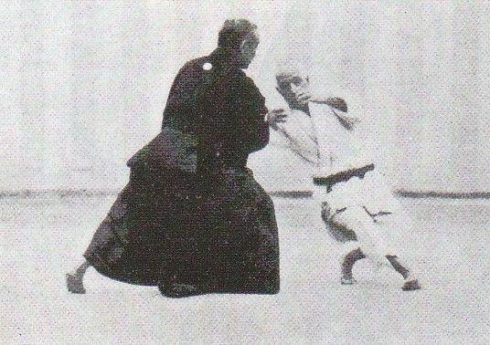

2. Filosofia, principi e obiettivi del Judo
Chi arriva al 4° dan ha già interiorizzato sul tatami ciò che Kanō Jigorō (嘉納治五郎) formalizzò tra il 1882 e il 1922: il judo non è una collezione di tecniche, ma un sistema educativo costruito su un principio fondante (ju-no-ri), un metodo (Seiryoku Zenyō) e uno scopo (Jita Kyōei). Saper raccontare questa architettura con la concretezza di chi pratica da decenni è il cuore di questo capitolo. Kanō, fondando il Kōdōkan (講道館, "il luogo dove si studia la Via"), scelse dō (道) al posto di jutsu (術) proprio per dichiarare questa ambizione: non un'arte del combattere, ma una via di formazione dell'uomo.
2.1 Ju-no-ri: il principio della cedevolezza
Ju (柔) significa morbidezza, adattabilità; ri (理) è principio, ragione profonda. Il ju-no-ri (柔の理) è dunque il "principio della cedevolezza": non opporre forza a forza, ma cedere alla forza avversaria sfruttandola a proprio vantaggio — squilibrandola, controllandola, vincendola con il minimo sforzo.
Attenzione all'errore del neofita: la cedevolezza non è passività. Chi cede passivamente viene semplicemente travolto. Il ju del judo è un adattamento attivo e intelligente della propria forza: si cede nella direzione della spinta avversaria proprio per condurla oltre il suo punto di equilibrio; si resiste alla trazione proprio per trasformarla in un ingresso. Ogni judoka esperto conosce la sensazione dell'avversario rigido che spinge e si proietta "da solo" non appena gli togliamo il sostegno della nostra resistenza. È il detto classico jū yoku gō o seisu (柔よく剛を制す), "la morbidezza vince la durezza": il più debole può battere avversari molto più forti, purché la cedevolezza sia guidata dalla tecnica e dalla lettura del momento.
Kanō lo illustrava con la metafora del salice che cede alla neve e non si spezza, mentre il pino rigido si rompe (immagine diffusissima, benché di difficile riscontro negli scritti autografi). Esempi pratici: l'avversario che spinge in avanti e viene catturato dalla sua stessa spinta in tai-otoshi; chi "tira" con forza nelle prese ed espone il proprio asse a de-ashi-harai; il ne-waza in cui si cede la posizione apparente per rovesciare. Ma il ju-no-ri non si esaurisce nel combattimento: è il fondamento antropologico del judo, l'atteggiamento di chi valuta il contesto, si adatta e agisce con decisione al momento giusto. Da esso derivano, come applicazioni, tanto il metodo (Seiryoku Zenyō) quanto lo scopo (Jita Kyōei).
2.2 Seiryoku Zenyō: il miglior uso dell'energia

Kanō (a sinistra) e Yamashita dimostrano hiki-otoshi del Koshiki-no-kata: il massimo rendimento con il minimo sforzo (foto d’epoca, pubblico dominio)
Nel 1922, fondando la Società Culturale del Kōdōkan (Kōdōkan Bunkakai), Kanō fissò le due massime ufficiali del suo metodo. La prima, Seiryoku Zenyō (精力善用), è tradotta abitualmente "il miglior impiego dell'energia" o "la massima efficienza". Il punto decisivo — spesso trascurato — è che seiryoku comprende l'energia fisica E quella mentale/spirituale. Nella definizione del Kōdōkan: usare pienamente le proprie energie spirituali e fisiche per realizzare uno scopo prefissato è l'uso più efficace del potere della mente e del corpo. Kanō la chiamava esplicitamente «l'insegnamento fondamentale del judo».
Sul piano tecnico, Seiryoku Zenyō si incarna nel kuzushi (崩し, lo squilibrio): proiettare un corpo in equilibrio richiede forza bruta; proiettarlo dopo averlo condotto fuori asse richiede una frazione di quell'energia. La triade kuzushi–tsukuri–kake (squilibrio–inserimento–esecuzione) è la grammatica operativa del principio: ogni spreco eliminato — la presa inutile, la tensione superflua, l'ingresso forzato — ne è un'applicazione. E nel randori impariamo la massima efficienza anche quando potremmo facilmente sopraffare l'avversario con la forza.
Ma la portata del principio è generale, e qui sta la sua profondità filosofica. Kanō: applicato all'attacco e alla difesa, rende possibili kata e randori; diretto al miglioramento del corpo, diventa educazione fisica; applicato alla conoscenza, diventa metodo di perfezionamento personale; applicato alla vita sociale — i doveri, i rapporti, l'amministrazione — diventa un modo di vivere. Ne discendono conseguenze pratiche: preoccuparsi è uno spreco di energia; cercare sempre il miglior corso d'azione possibile, quali che siano le circostanze; e il divieto morale implicito, lapidario: non fare nulla che sia inutile. Dopo anni di pratica, anche fuori dal dojo si diventa allergici allo spreco — di movimento, di parole, di rabbia.
2.3 Jita Kyōei: la prosperità reciproca
La seconda massima del 1922, Jita Kyōei (自他共栄), si compone di ji-ta (sé e gli altri) e kyō-ei (fiorire insieme): "mutuo benessere e prosperità", "beneficio reciproco". Se Seiryoku Zenyō dice come usare l'energia, Jita Kyōei dice per che cosa: il miglior uso dell'energia è quello rivolto al bene comune, perché il progresso della comunità si realizza attraverso l'aiutarsi a vicenda, il cedere a vicenda (sōjo-sōjo).
Nessun luogo incarna questo principio meglio della coppia tori–uke. Uke non è un avversario da danneggiare: è il partner senza il quale il progresso non esiste. Tori impara a proiettare perché uke gli offre il corpo e una caduta corretta; uke impara cadute, sensibilità, tempismo proprio facendosi proiettare: la realizzazione dell'uno è condizione della realizzazione dell'altro. Il randori (乱取り, l'esercizio libero) è la pratica quotidiana del principio: si combatte a piena intensità ma senza infortuni, perché l'obiettivo non è distruggere il compagno ma crescere insieme a lui. Chi in randori "si allena per vincere" anziché per imparare ha già tradito Jita Kyōei; e il senpai che maltratta il kōhai riproduce quella degenerazione dei vecchi dojo di jūjutsu — gli anziani che gettavano a terra i giovani a piacimento — che Kanō volle correggere fondando il judo.
Fuori dal tatami, il principio diventa etica della cooperazione: l'efficienza massima posta al servizio del bene comune. La coppia ideale "Seiryoku Zenyō – Jita Kyōei" è dunque la forma suprema del pensiero di Kanō: metodo e scopo, mezzo e fine.
2.4 Gli obiettivi del judo secondo Kanō
Per la prova d'esame è essenziale conoscere con precisione i tre scopi dichiarati che Kanō assegnò al judo, già presenti nella dichiarazione programmatica del 1884 e ribaditi nell'opera matura:
- L'educazione fisica e la capacità di attacco e difesa — la cultura del corpo attraverso la pratica, che include la proficiency nel combattimento e la difesa personale;
- La cultura del corpo come sviluppo armonico e igienico — il judo come metodo di educazione fisica, che nel 1911 entrò nei programmi scolastici giapponesi anche per merito di Kanō, educatore di professione;
- La formazione morale e intellettuale — la coltura della mente e del carattere, il vero salto di qualità rispetto al jūjutsu come mera tecnica.
Questi tre obiettivi convergono in uno scopo ultimo, espresso nella frase che ogni candidato al 4° dan dovrebbe saper citare: «Lo scopo dello studio del judo è il perfezionamento di sé stessi per contribuire al bene della società». In forma più ampia: allenandoti in attacco e difesa affini corpo e anima e fai dell'essenza spirituale del judo una parte del tuo essere, così da perfezionare te stesso e dare un contributo di valore al mondo. Questo è il fine ultimo della disciplina.
La catena logica è ora completa: ju-no-ri (principio) → Seiryoku Zenyō (metodo) → Jita Kyōei (scopo) → perfezionamento di sé per essere utili alla società (scopo ultimo). E poiché Kanō era educatore prima ancora che maestro di arti marziali, non stupisce la sua convinzione che nulla sotto il sole sia più grande dell'educazione: educando una persona e mandandola nella società della sua generazione, diamo un contributo che si estende per cento generazioni a venire.
2.5 Rei: l'etichetta come forma educativa
Rei (礼) è saluto, cortesia, etichetta. Nel budo vale il principio rei ni hajimari, rei ni owaru: la lezione inizia con il saluto e finisce con il saluto. Ma il rei non è formalismo vuoto: è espressione vissuta di rispetto e gratitudine — inchinarsi significa ringraziare il compagno per averci dato l'opportunità di migliorare la nostra tecnica. In questo senso il saluto è una vera "vaccinazione contro l'arroganza": somministrata a piccole dosi, ogni giorno, entrando e uscendo dal tatami, protegge il judoka — soprattutto il forte, il graduato, il vincitore — dal veleno dell'orgoglio. Kanō raccomandava di camminare su un unico sentiero, senza insuperbirsi per la vittoria né abbatterti per la sconfitta: il rei è la pratica quotidiana di quel distacco.
Le forme concrete le conosciamo tutti: lo zarei (seduto, in seiza) e il ritsurei (in piedi); la successione shōmen ni rei (alla parete d'onore), sensei ni rei, otagai ni rei (reciproco); il saluto agli ufficiali di gara. Il kamiza (上座, il lato d'onore del dojo) e l'ordine in fila per grado traducono spazialmente l'etichetta.
Il rapporto senpai/kōhai (先輩/後輩, anziano/allievo) è il canale concreto di Jita Kyōei dentro il dojo: il senpai ha il dovere di guidare e proteggere il kōhai, il kōhai quello del rispetto e dell'ascolto. Non è gerarchia di potere ma di responsabilità: si è senpai per servire chi viene dopo. E vale sempre il monito attribuito a Kanō: chiedere può essere la vergogna di un momento; non chiedere e restare ignoranti è la vergogna di una vita.
Precisazione importante per l'esame. Il Kōdōkan non ha mai istituito un "dojo kun" ufficiale paragonabile a quello del karate: le uniche massime ufficiali sono Seiryoku Zenyō e Jita Kyōei (1922). Il Codice Morale del judo in 8 valori (educazione/cortesia, coraggio, sincerità, onore, modestia, rispetto, autocontrollo, amicizia) è una formulazione francese, creata in Francia nel secondo dopoguerra per sintetizzare il carattere educativo del judo e largamente adottata in Europa, Italia compresa. Nei dojo italiani la recita collettiva del codice dopo il mokusō (黙想, meditazione silenziosa) è prassi didattica consolidata, ma non un rituale codificato dal Kōdōkan. Saper distinguere il documentato dalla tradizione è, per un 4° dan, segno di maturità: chi presenta il codice morale come "invenzione di Kanō" ignora la storia della propria disciplina; chi ne spiega genesi, valore pedagogico e limiti storiografici dimostra di esserne maestro.